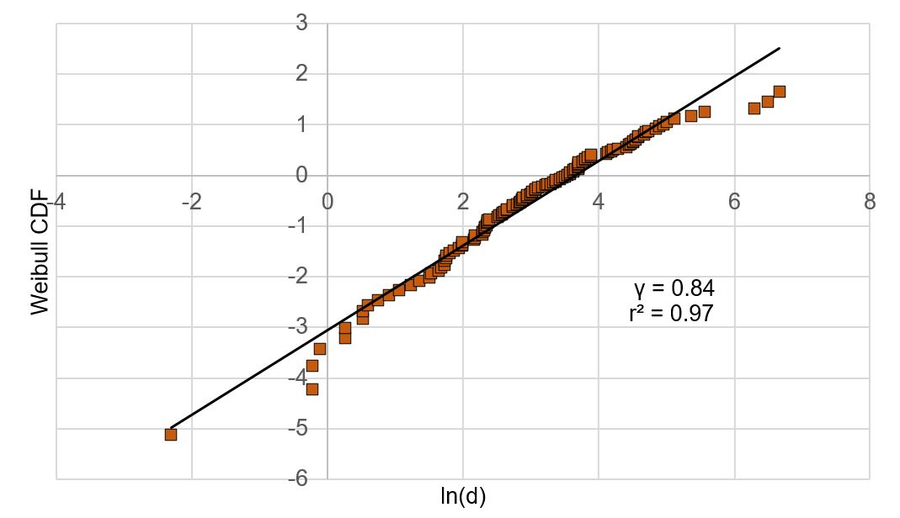
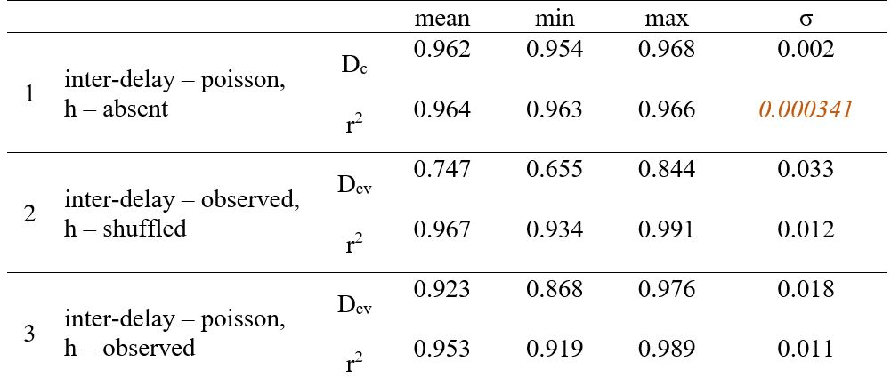
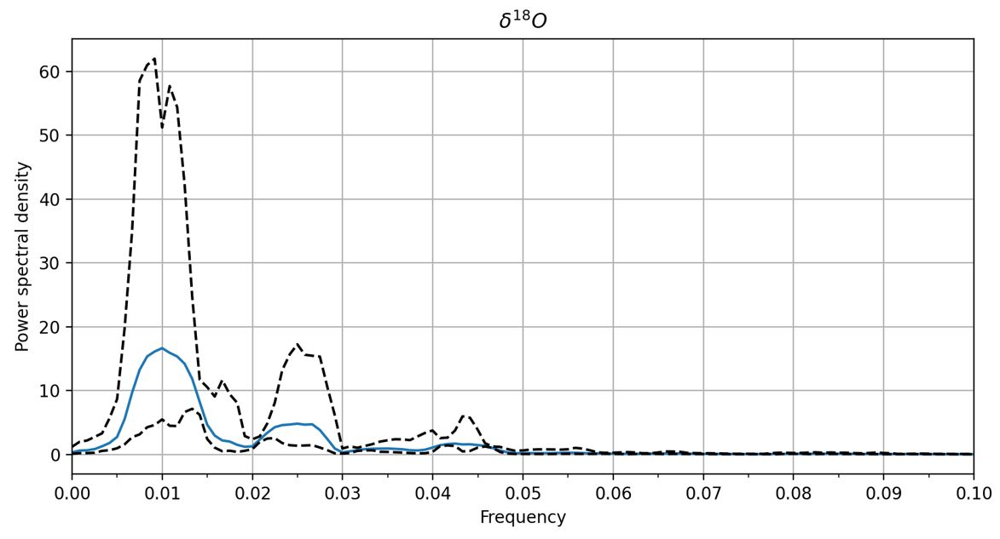
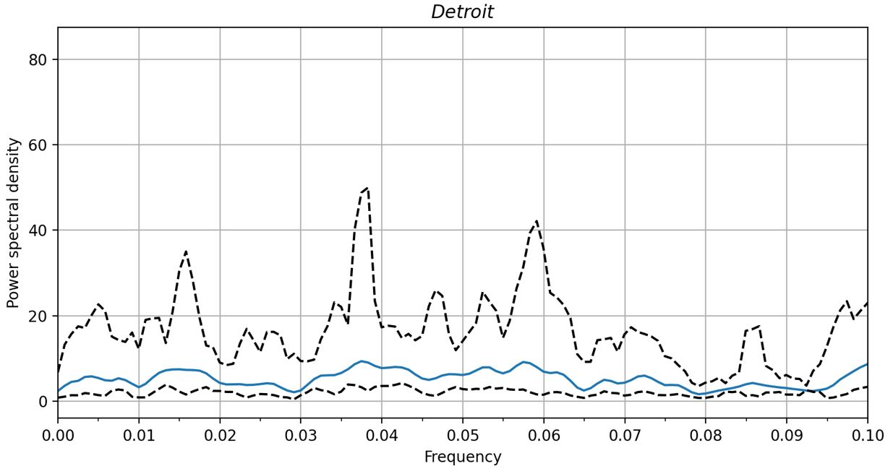

Statistical analysis of Quaternary eruptions in Kamchatka

We have obtained a 6.3 Ma-long sequence of ash-falls deposited on Detroit seamount, NE Emperor chain. It is a unique composite record of explosive volcanism located downwind of the highly explosive volcanic arc of Kamchatka.
This research hasn't been published yet, so I can't give many details of all the steps of analysis. Right now the text of the article is still in progress.
Fractal analysis
Previously our collegues analyzed similar sequence of ash-falls but for Holocene eruptions consisted of only 29 values. Now we decided to apply same processing on new data. I performed all the statistics, described here.
Independent events occurring with a constant mean rate in a fixed time interval are usually expressed by Poisson distribution. If real events do not fit to Poisson model, they are either not independent (thus, form a periodicity or, the opposite, clusters), or time intervals between them vary. To check if Detroit data fit to any of mentioned cases, I analysed inter-event delays (d), that is time intervals between events.
γ, that is a shape parameter of Weibull distribution, defines if the probability of inter-delay to be less than mean inter-delay. If γ = 1, Weibull distribution reduces to Poisson distribution. If γ < 1, the sequence is clustered, i.e. events group (small intervals occur more often than in Poisson model), meaning that it is fractal. If γ > 1, events are separated, the sequence tends to periodicity (small intervals occur less often than in Poisson model). So here Weibull cumulative distribution function (CDF) would give some insights.

This figure shows Weibull CDF scatter plot, approximated by a straight-line, where the slope is γ = 0,84. Since γ < 1, the sequence is not random, and it is clustered, however the characteristic scale remains unknown.
Another disadvantage is that Weibull model reveals clustering trend only for intervals between two adjacent events, whereas true self-similarity may be noticed when analyzing all observed inter-delays. In this case, a key parameter is fractal dimension. First, consider "Event – time" series.
Fractal dimension (Dc) determines as a slope of Cd ~ log10(n/nmax). The definitions of these expressions are states in the source article. Please refer to [Gusev et al, 2003] for details. I only specify that in a limiting case of Dc = 1, inter-event delays distributed by Poisson model. If Dc < 1, they group into clusters rather than have individual periodicity.
Dc = 0,72, r2 = 0,97
To consider the intensity of events, the same analysis was conducted to "Tephra volume - time" series. Fractal dimension is calculated in a little bit different way due to using cumulative weight function (again, refer to [Gusev et al, 2003]), however we also look at the slope.
Dcv = 0,7, r2 = 0,97
Some points of the scatter, that are separated from the majority, represent ash-falls of small thickness due to possible absence of tephra layers in the sea mount cores, providing overestimated inter-delays. Thus, only the majority that can be approximated by straight-line was considered in the research.
In order to prove the significance of clustering, I calculated Dc in case of true Poisson sequence. For that, I generated an artificial sequence of 119 random inter-delays corresponding to a Poisson distribution with a mean rate 52.8, that is mean of real inter-delays. Then the same calculation was performed 5000 times by Python 3.9 code.
The results are in the table below (1). In all 5000 iterations Dc value is almost same, meaning that poisson non-fractal sequence Dc is truly equals 1, unlike Detroit sequence (Dc Detroit < Dc poisson).
Also, I had to check if the order of events in Detroit sequence is significant. So I performed the same calculation with volumes of tephra randomly shuffled, thus simulating events of given intensity occuring in random order. Inter-delays remained same as in the real sequence. Then the same analysis was conducted 5000 times. Take a look at (2) in the table.

Dcv shuffled = 0.75, r2 = 0.97 meaning that artificial shuffled sequence is more self-similar than the real one.
A fractal dimension is different for real events and tephra time-series. Since Dc > Dcv (0.72 > 0.7), Detroit sequence is likely to have “order clustering” effect as events group not only by time, but also by volume simultaneously.
Spectral analysis
Spectral analysis was conducted due to reveal periodicity trends by multitaper method invented by David Thompson to estimate power spectrum. The main advantage of the method is reducing bias due to using multiple uncorrelated tapers. This method assumes that discrete prolate spheroidal sequences (DPSS) are used as tapers, therefore each taper obtains independent estimation of the time-series. Averaging each estimates reduces dispersion that would one taper have. However, the time-series data should have equal time intervals (dt).
The idea to use it belong to Steffen Kutterolf whose research inspired us to apply such a method to Detroit sequence.
Spectral analysis was processed by multitaper 1.1.3 python package of German A. Prieto, MTSpec module. The package allows to calculate power spectral density (PSD) with 95% confidence interval of multitaper estimate. Both curves were smoothed by moving average.
The delta O18 time-series was chosen as a sample sequence that is known to depend on Milankovich cycles. I chose time-series of 600 ka, because О18 series has regular dt (interval) until 600 ka. dt value depends on the quantity of analyzing observations, so 1 ka was set as optimal for a series of such a time extent.
The result is PSD plot showing peaks on particular frequencies. In this case peaks are expected to be observed on 0.01 and 0.025 corresponding
to 100ka and 40ka respectively.



Except these peaks PSD tends to zero. These 0.01 and 0.025 frequency peaks are observed in different time intervals of the series. In the modern time interval the most intensive peak is 100ka. However, the older the interval, the stronger becomes a 40ka peak influence and 100ka reduces. After 1Ma, 100ka peak smooths and almost reduces, however 40ka range increases.



The same analysis performed on Detroit time-series results in the lack of a few particular peaks. This plot is irregular, and PSD does not tend to zero, but fluctuates chaotically. Different time-intervals of the series result in disparate plots, however all of them do not display peaks on particular frequencies.
Short summary
Comparing the results of these two separate analysis, we can say that the Detroit sequence
1) is not random;
2) consists of events that group into clusters not only by the time, but also by the volume of tephra simultaneously;
3) has no periodicity, thus is not affected by Milankovich (or other) cycles.